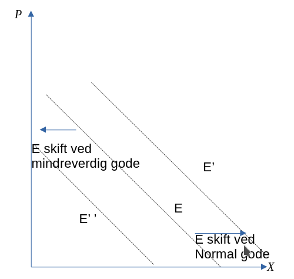
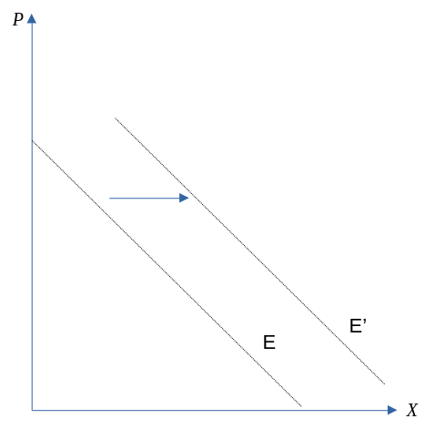
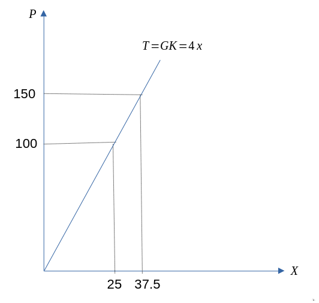
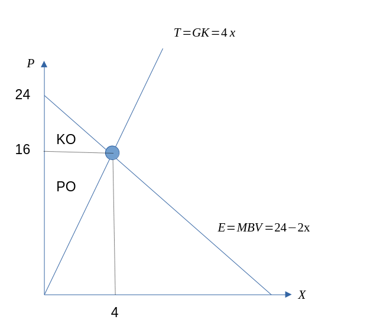
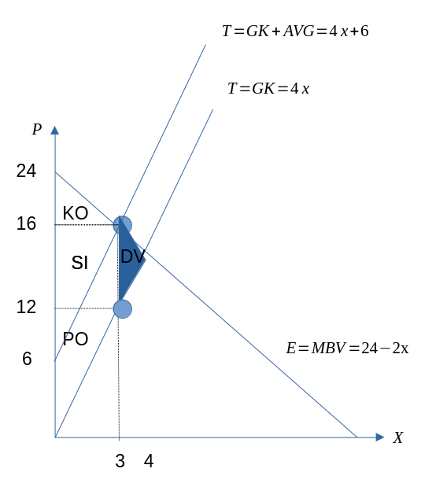

Obligatorisk innleveringsoppgaver
- Canvas
- Versjon 1.1
- Kan jobbe alene, eller levere som gruppe (bestemmer selv antallet, men utbytte av arbeidskravet vil nok være større ved en mindre gruppe)
Oppgave 1: Generell forståelse
I. Er følgende påstander riktig eller gale? Begrunn svaret ditt med økonomisk teori.
- Økonomi handler først og fremst om penger.
Galt: Handler først og fremst om forvaltningen av knappe ressurser for å dekke menneskelige behov.
- Følgende produktfunksjon er konkav: \(X(N)=N^{\alpha} \text{ der } 0<\alpha<1.\)
Riktig: Siden ved bruk av arbeidskraft vil \(X'(N)=\alpha N^{\alpha-1} >0\) og \(X''(N)=(\alpha-1)\alpha N^{\alpha-2} <0\)
- Grenseinntekten til en bedrift viser hvor mye mer bedriften kan produsere dersom inntekten stiger med 1 krone.
Galt: Grenseinntekten viser inntektsendring som følge av at produksjonen øker med én enhet.
- Anta Mona sin MSB = 4. Det betyr at Mona er villig til å gi bort 4 enheter av gode 2 for én ekstra enhet av gode 1.
Riktig: MSB forteller oss at dersom vi øker det som står på x-aksen (gode 1) med én enhet, hvor mye vi må oppgi av det gode som står på y-aksen (gode 2) gitt at vi skal være på samme nyttenivå. I dette tilfelle dreier det seg om 4 enheter.
II: Forklar følgende begreper:
- Nyttefunksjon
En funksjon som for enhver godekombinasjon gir oss den samlede nytten ved å konsumerer denne godekombinasjonen. Gitt en ordinal nyttefunksjon, vil den samlede nytten være gitt ved et tall som rangerer godekombinasjonene, dvs. høyere tall desto bedre rangering.
- Grensenytte
Endring i nytte av å motta én ekstra enhet av et gode.
- Marginal substitusjonsbrøk (MSB)
Gitt som forholdet mellom grensenytten av de to godene. Vi kan uttrykke (\(\frac{U'(X_{1})}{U'(X_{2})}\)), og verdien som fremkommer forteller hvor mange enheter av gode \(X_{2}\) man er villig til å oppgi for å oppnå én enhet ekstra av gode \(X_{1}\).
- For konsumenten, sammenhengen mellom den marginale betalingsviligheten (MBV) og betalingsvilligheten (BV)
Betalingsvilligheten (BV) for et vist antall goder X er gitt som summen av den marginale betalingsviligheten (MBV) til hvert enkelt gode opp til og med X.
- For bedriften, sammenhengen mellom den marginale grensekostnaden (GK) og de variable kostnadene (VK)
De variable kostnadene for et gitt kvantum x er gitt som summen av de marginale grensekostnaden (MG) for alle kvantum opp til og med X.
- Ta utgangspunkt i en fallende etterspørselskurve i et pris-mengde diagram.
- Vis hvordan etterspørselskurven påvirkes av økt inntekt blant konsumentene dersom godet er normalt, og mindreverdig.
Ved normalt gode, etterspørselskurven skifter til høyre. Ved mindreverdig gode, skifter til venstre.

- Vis hvordan etterspørselskurven påvirkes av økt pris på en alternativ vare.
Ved økt pris på alternativ vare, etterspørselskurven skifter til høyre.

Oppgave 2: Produksjonsteori på kort sikt
Bedriften Cambå produserer handlevogner hvor kostnadsfunksjonen gitt ved \(C = 2 x^{2}\). Produktprisen er gitt ved \(100\) kroner.
- Gi en forklaring på egenskapene til Cambå sine grensekostnader.
Siden vi har at \(C'(x)=4x^{2-1}=4 x>0\) og \(C''(X)=4>0\) kan vi si at grensekostnaden er positive og stigende. Dvs. desto flere produserte enheter, desto høyere grensekostnader, og hvor kostnadsøkningen som kommer som en følge av den siste enheten vil være større enn de foregående enhetene.
- Finn betingelsen (førsteordens-betingelsen) som maksimerer fortjenesten til bedriften. Gi deretter en økonomisk tolkning av denne tilpasningsbetingelsen.
Uttrykket for fortjensten (F) er gitt ved
\[
F=pX-C(x)=100x-2x^2
\] Ved å maksimere dette uttrykket mhp.
\(x\), finner vi at betingelsen (førsteordens) for antall produserte enheter som gjør fortjenesten størst mulig:
\[\begin{aligned}
100 - 4 x = 0 \Leftrightarrow 100=4x
\end{aligned}\]
Tolkning: produksjonen settes slik at grensekostnaden er lik produktprisen. Dette er optimalt, siden dersom produkprisen er høyere (lavere) enn grensekostnaden vil bedriften øke sin fortjeneste ved øke (redusere) sin produksjon.
- Hvor mange enheter vil Cambå måtte produsere gitt at bedriften har som mål å maksimere sin fortjeneste?
Dersom vi løser førsteordensbetingelsen mhp. på \(x\) finner vi at dette produksjonsvolumet er gitt ved \[
4x=100 \Rightarrow x = \frac{100}{4}=25
\]
- Hva blir fortjenesten til bedriften i dette tilfellet?
Fortjenesten vil derfor her være gitt ved
\[\begin{aligned}
\text{F} = 100\cdot 25 − 2\cdot 25^2 = 2500 − 1250 = 1250
\end{aligned}\]
- Vis ved bruk av en figur og forklar hva som skjer med tilbudet til bedriften i produktmarkedet dersom prisen øker.
Dersom produktprisen øker (eks. fra 100 til 150), vil grensekostnaden i utgangspunktet være lavere enn produktprisen. Det vil gjøre det lønnsomt for bedriften å øke tilbudet helt inntil betingelsen om at grensekostnad skal være like produktpris er oppfylt.

- Vi lar bruken av arbeidskraft være representert ved N. Vis at produksjonsfunksjonen
\(x = N^{0.5}\) gir opphav til de variable kostnadene som er lik \(2 x^{2}\) gitt at lønnskostnaden per arbeider er lik 1 2 kroner.
\[\begin{aligned}
x=N^{0.5} \\
x^2=N \\
N=x^2 \\
\end{aligned}\]
Hvor faktorutlegget vil være lik de variable kostnadene som vil være git ved
\[\begin{aligned}
C_v=wN=2X^2
\end{aligned}\]
Oppgave 3: Konsumentteori
Anta en konsument med følgende nyttefunksjon: \[\begin{equation}
U(x_{1}, x_{2}) = 7x_{1}x_{2}
\end{equation}\] Konsumentens budsjettbetingelse er gitt ved \(p_{1}x_{1} + p_{2}x_{2} = R\), der \(R = 600\), \(p_{1} = 2\) og \(p_{2} = 4\).
- Finn optimalt konsum av de to godene.
Førsteordensbetinigelsene fra Lagrange-metode gir oss et system bestående av to ligninger:
\[\begin{aligned}
MSB=\frac{p_1}{p_2}\\
p_{1}x_{1} + p_{2}x_{2} = R
\end{aligned}\]
Ved å ta utgangspunkt i informasjonen gitt i oppgaven får vi
\[\begin{aligned}
\frac{x_2}{x_1}=\frac{2}{4}=\frac{1}{2}\\
2x_{1} + 4x_{2} = 600
\end{aligned}\]
Løser det første uttrykket mph \(4x_2=2x_1\) og setter dette inn i budsjettbetingelsen gir oss
\[\begin{aligned}
2x_1 + 2x_1 = 600 \\
x_1(2+2) = 600 \\
x_1 = 600/4 = 150
\end{aligned}\]
Setter denne løsningen tilbake i budsjettbetingelsen for å finne
\[\begin{aligned}
2\cdot 150 + 4x_2 = 600 \\
4x_2 = 600 - 300 \\
x_2 = 300/4 = 75 \\
(\text{Kontroll:} \frac{x_2}{x_1}=\frac{75}{150}=\frac{1}{2})
\end{aligned}\]
- Anta at prisen på gode 1 øker til 3. Hva blir etterspørselen etter gode 1 nå?
Løser det første uttrykket mph \(4x_2=3x_1\) og setter dette inn i budsjettbetingelsen gir oss
\[\begin{aligned}
3x_1 + 3x_1 = 600 \\
x_1(3+3) = 600 \\
x_1 = 600/6 = 100\\
\end{aligned}\]
- Regn ut egenpriselastisiteten basert på %-vis endring i etterspørsel og pris. Kategoriser elastisiteten.
\[\begin{aligned}
\frac{\Delta x_{1}}{x_{1}}/\frac{\Delta p_{1}}{p_{1}}=\frac{\Delta (100-150)}{150}/\frac{\Delta (3-2)}{2}=-0.33/0.5=-0.66
\end{aligned}\]
Siden verdien ligger i intervallet mellom -1 og 0 \(\rightarrow\) godet er prisuelastisk.
Oppgave 4: Markedsteori: Fullkommen konkurranse med og uten avgift
Vi ser på et marked under fullkommen konkurranse. Etterspørselen er gitt ved (den marginale betalingsvillighet) \(P = 24 – 2X\) og tilbudet (grensekostnaden) som \(P = 4X\).
- Finn likevektspris og omsatt kvantum. Vis tilpasningen grafisk.
Vi starter med omsatt kvantum. I fullkommen vil løsningen være karakterisert ved at MBV=GK, det gir oss
\[\begin{aligned}
24-2x=4x \\
6x =24 \\
x^{FK}=x =\frac{24}{6} = 4
\end{aligned}\]
Setter vi dette kvantumet inn i enten etterspørs- eller tilbudskurven vil vi finne produktprisen
\[\begin{aligned}
MBV: P = 24-2\cdot 4=16 \\
(GK: P = 4\cdot 4= 16)
\end{aligned}\]

- Regn ut konsumentoverskuddet (KO), produsentoverskuddet (PO) og samfunnsøkonomisk overskudd (SO).
Konsumentoverskuddet er gitt ved arealet til trekanten
\[\begin{aligned}
KO = (4-0)\cdot(24-16)/2 = 16
\end{aligned}\]
Mens produsentoverskudet er gitt ved
\[\begin{aligned}
PO = (4-0)(16)/2 = 32
\end{aligned}\]
Samfunnsøkonomisk overskudd blir derfor
\[\begin{aligned}
SO = PO+KO =32+16= 48
\end{aligned}\]
- For å skaffe inntekter til statskassen, innføres en skatt på 6 kroner per produsert enhet. Regn ut \(P_K\) (pris til konsument), \(P_P\) (pris til produsent) og omsatt kvantum \(X\).
Skatt per enhet gjør at tilbudskurven kan skrives som
\[\begin{aligned}
P = 4x + 6 \\
24-2x=4x+6 \\
6x =18 \\
x = 3
\end{aligned}\]
Prisen til konsument blir derfor
\[\begin{aligned}
P_k = 24 - 2\cdot 3 = 18
\end{aligned}\]
Mens pris til produsent blir
\[\begin{aligned}
P_p=4\cdot3 = 12
\end{aligned}\]
- Hva blir KO, PO og SO denne gangen? Vi antar her at skatteinntekten inngår i det samfunnsøkonomiske overskuddet.
Konsument- , produsentoverskudd og samfunnsøkonomisk overskudd er nå gitt ved
\[\begin{aligned}
KO = \frac{(3\cdot (24-18))}{2} = 9\\
PO = (3\cdot (12-0))/2 = 18\\
SI = 3\cdot (18-12)= 18 \\
SO (\text{med tilbakebetaling av SI til KO og PO})= 9+18+18=45
\end{aligned}\]
- Regn ut effektivitetstapet og illustrer denne tilpasningen ved hjelp av en figur.
\[\begin{equation}
DT = \frac{(4-3)\cdot (18-12)}{2}=3
\end{equation}\]

- Vil de samfunnsøkonomiske konsekvensene av avgiften bli påvirket av etterspørselens og tilbudets prisfølsomhet (priselastisitet)? Begrunn svaret.
Essensen med stykkavgiften på 6 kroner er at den medfører et effektivitetstap som følge av at den skaper en kile mellom den prisen som kundene betaler og den pris produsentene mottar. Generelt vil det være slik at desto mer priselastisk etterspørselen og tilbudet er, desto større vil effektivitetstapet være.